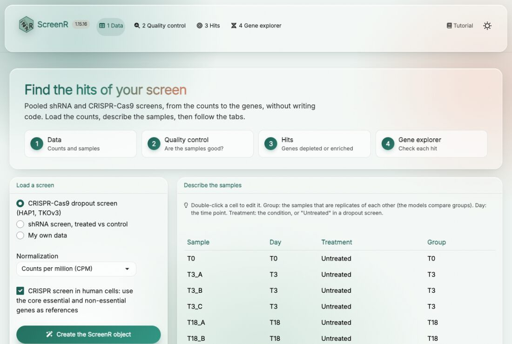
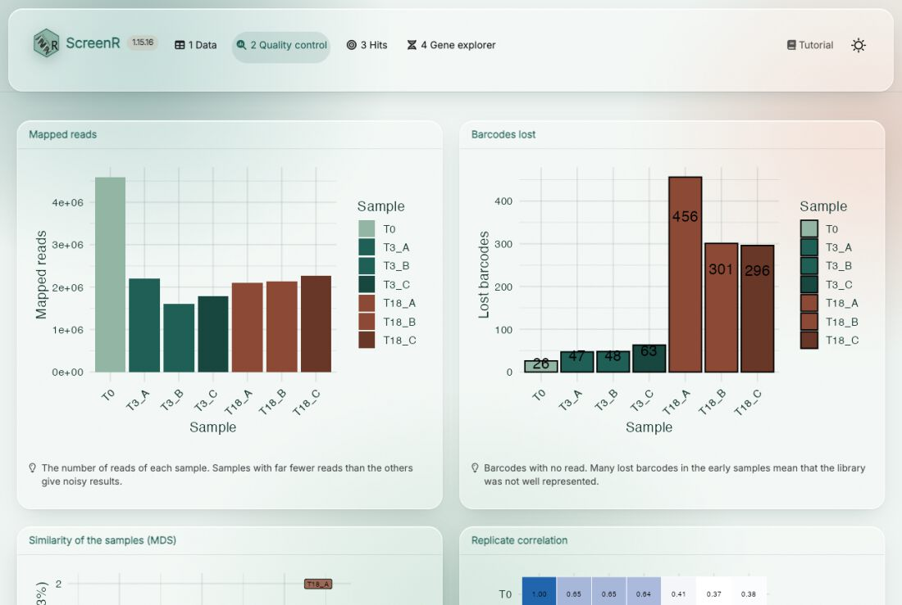
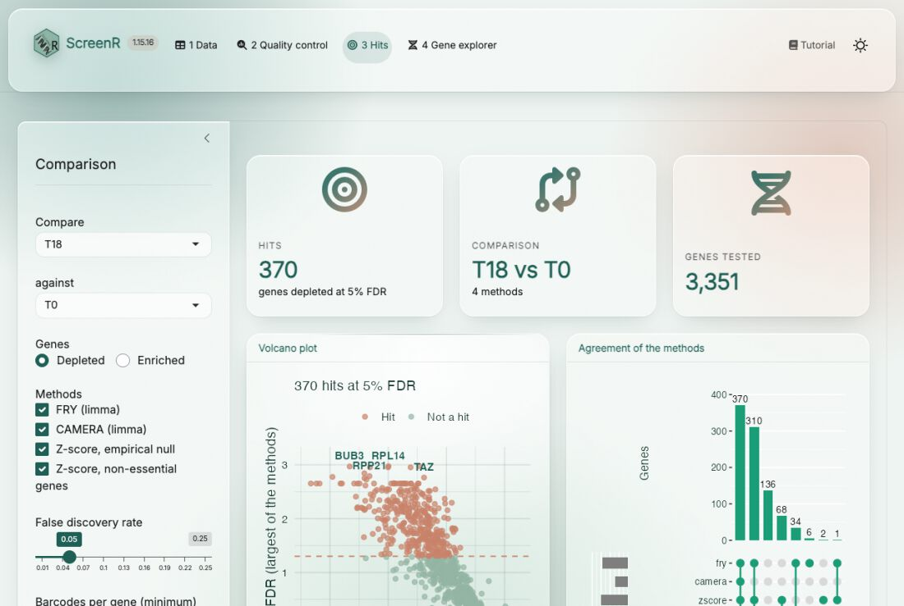
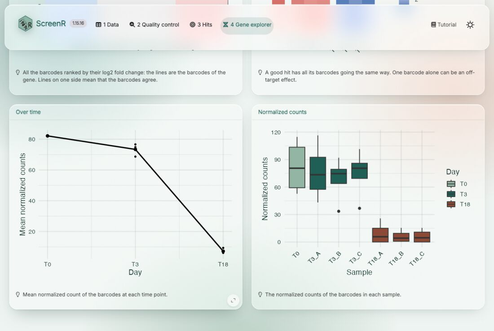

Tutorial 5: the ScreenR app
Emanuel Michele Soda
Istituto Europeo Oncologia (IEO), Milano, Italyemanuelsoda@gmail.com
Elena Ceccacci
Istituto Europeo Oncologia (IEO), Milano, Italyelena.ceccacci@ieo.it
2026-10-25
Source:vignettes/Tutorial_5_ScreenR_app.Rmd
Tutorial_5_ScreenR_app.RmdAbout this tutorial
ScreenR includes an app that runs in the web browser and analyses a screen without writing code. It is meant for the people who did the experiment: load the counts, describe the samples, check their quality, find the hits and look at each hit at the level of its barcodes. The app uses the same functions as the other tutorials, and it gives back an R script that repeats the analysis, so that a bioinformatician can check it or take it further.
This tutorial explains how to install and launch the app, and goes through its four tabs.
Installation
The app needs three packages that are not installed with ScreenR: shiny, bslib and DT.
if (!requireNamespace("BiocManager", quietly = TRUE)) {
install.packages("BiocManager")
}
BiocManager::install(c("ScreenR", "shiny", "bslib", "DT"))Launching the app
Open R (or RStudio) and type:
The app opens in the web browser. It runs on your computer: the data are not sent anywhere. To stop it, close the browser tab and press Esc (RStudio) or Ctrl + C (terminal) in R.
An object created in R can be opened directly in the app, for example to show a screen to a colleague:
run_screenr_app(object)screenr_app() returns the app without running it, which
can be used to deploy it on a Shiny server for the whole lab.
1. Data

Load a screen. Choose one of the two example screens included in ScreenR to try the app (a CRISPR-Cas9 dropout screen in HAP1 cells and an shRNA screen with treated and control cells), or My own data:
-
Count table: one row per barcode (shRNA or sgRNA)
and one column per sample, as a tab-separated (
.txt,.tsv) or comma-separated (.csv) file. A count file of MAGeCK (mageck count), with the sgRNA and Gene columns, works as it is. Choose the columns with the barcode and the gene. - Annotation: only when the count table has no gene column, a table with the Barcode and Gene columns.
Normalization. Counts per million (CPM) or TMM; CPM is a good default.
CRISPR screen in human cells. Uses the core essential and non-essential genes of Hart et al. (2017) as references: to measure the quality of the screen and as an extra method to find the hits.
Describe the samples. The app guesses the description of the samples from their names; double-click a cell to correct it:
- Group: the samples that are replicates of each other. The statistical models compare groups, so this is the most important column.
- Day: the time point.
- Treatment: the condition (for example treated and control), or “Untreated” in a dropout screen, where the comparison is between time points.
Then press Create the ScreenR object. The boxes at the bottom summarise the screen: samples, barcodes, genes and mapped reads.
2. Quality control

Check the samples before looking for hits. Each plot has a short note on what to look for:
- Mapped reads: samples with far fewer reads than the others give noisy results.
- Barcodes lost: many barcodes without reads in the early samples mean that the library was not well represented.
- Similarity of the samples (MDS) and replicate correlation: replicates should be close to each other.
- Distribution of the counts and Gini index: how even the library is; the Gini index grows over time as barcodes drop out.
The details are in Tutorial 2. Every card can be enlarged with the button in its bottom right corner.
3. Hits

Choose the comparison in the panel on the left: the group to compare (for example the treated cells, or the last time point) against a control group (the control cells, or T0), and whether to look for depleted or enriched genes. Then choose the methods:
- FRY (limma): do the barcodes of the gene change?
- CAMERA (limma): do they change more than the barcodes of the other genes?
- Z-score, empirical null: is the mean score of the barcodes extreme, compared with the genes without effect?
- Z-score, non-essential genes (CRISPR screens): the same test, with the non-essential genes as reference.
A gene is a hit when every method finds it at the chosen false discovery rate. Genes with fewer barcodes than barcodes per gene are not tested. Press Find hits.
- The volcano plot (
plot_volcano()) shows every gene: how much its barcodes change (x) and how significant it is in the least favourable method (y). The hits are above the dashed line. - Agreement of the methods shows how many genes each method finds and how they overlap.
- The table lists all the genes with the FDR of each method, the hits first. Download it with Table (.csv).
- R script downloads the R code of the analysis.
- For CRISPR screens, screen quality shows how well the core essential genes separate from the non-essential genes (an AUC above 0.9 is a good screen).
Click a gene in the volcano plot or in the table to open it in the gene explorer.
The methods are described in Tutorial 3 and Tutorial 4.
4. Gene explorer

Look at a hit in the data before validating it. Search a gene (or click it in the Hits tab); the badges show whether it is a hit and its FDR in each method. The plots show:
- all the barcodes ranked by their log2 fold change, with the barcodes of the gene marked: a good hit has its barcodes on the same side;
- each barcode in each sample: a gene supported by a single barcode can be an off-target effect;
- the mean normalized count of the barcodes over time;
- the normalized counts of the barcodes in each sample.
From the app to R
The R script of the Hits tab repeats the analysis in R, with the same sample description, normalization, comparison and methods:
# Analysis made with the ScreenR app
library(ScreenR)
data(hap1_count_table)
data(hap1_annotation_table)
counts <- hap1_count_table
annotation <- hap1_annotation_table
# ... the sample table and the object ...
design <- create_design_matrix(object)
contrast <- create_contrast(design, treatment = "T18", control = "T0")
statistics <- compute_barcode_statistics(object, design, contrast)
hit_list <- list(
fry = find_roast_hit(object, design, contrast, method = "fry",
number_barcode = 2, direction = "Down", fdr = 1, seed = 1),
camera = find_camera_hit(object, design, contrast,
number_barcode = 2, direction = "Down", fdr = 1),
zscore = find_gene_zscore_hit(statistics, reference = "empirical",
min_barcodes = 3, direction = "Down", fdr = 1)
)
hits <- summarise_hits(hit_list, fdr = 0.05)Running it gives the same table as the app. From there, all the functions of ScreenR are available: see the other tutorials.
Session info
sessionInfo()
#> R version 4.6.1 (2026-06-24)
#> Platform: x86_64-pc-linux-gnu
#> Running under: Ubuntu 26.04.1 LTS
#>
#> Matrix products: default
#> BLAS: /usr/lib/x86_64-linux-gnu/openblas-pthread/libblas.so.3
#> LAPACK: /usr/lib/x86_64-linux-gnu/openblas-pthread/libopenblasp-r0.3.32.so; LAPACK version 3.12.0
#>
#> locale:
#> [1] LC_CTYPE=C.UTF-8 LC_NUMERIC=C LC_TIME=C.UTF-8
#> [4] LC_COLLATE=C.UTF-8 LC_MONETARY=C.UTF-8 LC_MESSAGES=C.UTF-8
#> [7] LC_PAPER=C.UTF-8 LC_NAME=C LC_ADDRESS=C
#> [10] LC_TELEPHONE=C LC_MEASUREMENT=C.UTF-8 LC_IDENTIFICATION=C
#>
#> time zone: UTC
#> tzcode source: system (glibc)
#>
#> attached base packages:
#> [1] stats graphics grDevices utils datasets methods base
#>
#> other attached packages:
#> [1] BiocStyle_2.40.0
#>
#> loaded via a namespace (and not attached):
#> [1] digest_0.6.39 desc_1.4.3 R6_2.6.1
#> [4] bookdown_0.48 fastmap_1.2.0 xfun_0.62
#> [7] cachem_1.1.0 knitr_1.52 htmltools_0.5.9
#> [10] rmarkdown_2.32 lifecycle_1.0.5 cli_3.6.6
#> [13] sass_0.4.10 pkgdown_2.2.1 textshaping_1.0.5
#> [16] jquerylib_0.1.4 systemfonts_1.3.2 compiler_4.6.1
#> [19] tools_4.6.1 ragg_1.5.2 bslib_0.12.0
#> [22] evaluate_1.0.5 yaml_2.3.12 BiocManager_1.30.27
#> [25] otel_0.2.0 jsonlite_2.0.0 rlang_1.3.0
#> [28] fs_2.1.0 htmlwidgets_1.6.4